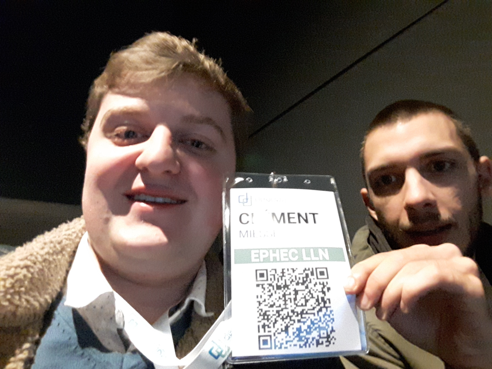
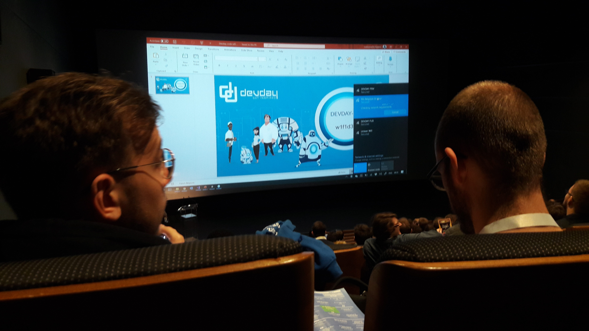

Le Devday 2019 s'est déroulé au cinéscope de Louvain-la-Neuve.
Nous avons commencé par une conférence sur l'intelligence
artificielle, un pas de plus vers le l'ambiant computing à 8h40 en
salle 7.
Puis, nous pouvions assisté à 6 conférences au choix réparties en 4
salles ( soit 24 conférences).
Premièrement, j'ai assité à la conférence Goodbye Javascript ? Hello
.NET.
Deuxièmement, j'ai assisté à "Les Design Patterns en C#" suite à son
inversion avec la conférence de 15h45 dans le planning.
Troisièmement, j'ai assisté au "Retour d'expérience Angular
Universal/ASP .NET Core/ Azure Devops".
Quatrièmement, j'ai assisté au Live Coding: 60 minutes de bonheur en
React.
Cinquièmement, j'ai assisté à Repoussez les limites du Web avec
WebAssembly.
Enfin, j'ai assisté à "Visual Studio versus VS Code - Lequel est le
plus Badass ?".

